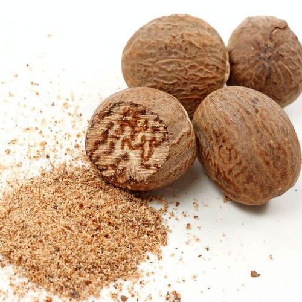

जायफळ विषयी माहिती

प्रस्तावना
जायफळ हे 10 ते 20 मिटर उंच वाढणारे सदापर्णी झाड आहे. जायफळामध्ये पपई व कोकम या प्रमाणेच नर व मादी झाडे वेवेगळी
असतात. जायफळ बागेमध्ये सुमारे 50 टकके झाडे मादी 45 टक्के नर व 5 टक्के संयुक्त फूले असणारे झाडे निघतात.
नराच्या झाडास गुच्छाने फुले लागतात तर मादी झाडास एक एकटी फूले लागतात.
जायफळाची फळे चिकुच्या आकाराची पण
गुळगुळीत व पिवळसर रंगाची असतात.
फळांच्या टरफलांच्या आतील अंगास गुलाबी रंगाची जाळी असते. या जाळीस जायपत्री
म्हणतात. फळांच्या टरफलांचा उपयोग लोणचे, चटणी, मुरंबा इत्यादि साठी करतात. जायफळाचा उपयोग मिठाई स्वादिष्ट
करण्यासाठी तसेच जायफळ व जायपत्रीचा उपयोग मसाल्यात केला जातो. जायफळातील तेलाचा उपयोग औषध, साबण, टुथपेस्ट
चॉकलेट इत्यादी उत्पादनात केला जातो.
हवामान व जमीन
जायफळ हे उष्ण कटिबंधातील पीक असून या पिकास दमट हवामान व 2500 ते 4000 मिमि पर्यन्त पाऊस चांगलाच मानवतो. पावसाची
व्यवस्थित विभागणी असेल अशा 1500 ते 3000 मिमि पर्यंत पाऊस पडणा-या प्रदेशातही हे पीक येते.
अति थंड म्हणजे 10
से.ग्रे. किंवा त्याखाली तसेच अतिउष्ण म्हणजेच 40 से.ग्रे. पेक्षा अधिक तापमान या पिकास मानवत नाही.
समुद्रसपाटीपासुन 750 मीटर उंची पर्यंन्त हे पीक घेतले जाते.
किनारी पटटीतील रेताड, गाळमिश्रीत रेताड, वरकस अशा विविध प्रकारच्या परंतु उत्तम निच-याच्या जमिनीत जायफळाची
लागवड होवू शकते.
पोयटयाची आणि पालापाचोळा कुजून तयार झालेली जमीन अधिक मानवते. या झाडाला देखील सावलीची आवश्यकता
असल्यामुळे आंतरपीक म्हणून घेतले जाते. नारळ – सुपारीच्या बागेत या झाडास आवश्यक असणारी सावली तसेच पश्चिमी
वा-यापासुन आवश्यक असणारे संरक्षण मिळते.
पूर्वमशागत
नारळाची लागवड 7.5 × 7.5 मिटर अंतरावर असल्यास पावसाळयापुर्वी प्रत्येक दोन नारळाच्या मध्यभागी व सुपारीच्या
बागेत चार सुपारीच्या झाडांच्या चौफूलीवर 90 सेमी लांबी रूंदी व खोलीचे खडडे भरताना प्रत्येक खडडयात 50 किलो
शेणखत / कंपोस्ट खत घालावे.
अभिवृध्दी
जायफळाची अभिवृध्दी बी पासुन तसेच कलमे करून ही करता येते. परंतु प्रामुख्याने जायफळाची अभिवृध्दी बियांपासुन
रोपे तयार करुन ही केली जाते. बिया पासून तयार केलेले रोपे हे नराचे आणि किंवा मादीचे हे कळत नाही. रोप लावल्यानंतर
त्याला जवळजवळ 6 ते 7 वर्षानंतर फुले येऊ लागतात. त्यानंतर ते झाड नराचे आहे किंवा मादीचे ते कळते. फक्त मादी
झाडास फळे धरतात.
रोपे तयार करण्यासाठी जायफळाचे ताजे बी वापराचे लागते. बी रुजविण्यासाठी 15 सेमी उंच 1 ते 1.5 मिटर रूंद व आवश्यक
त्या लांबीच गादीवाफे तयार करावेत. गादी वाफे तयार करण्यासाठी माती व वाळू यांचे योग्य मिश्रण वापरावे. तयार
केलेंल्या गादी वाफयावर जायफळाचे बी रूजण्यास सुरुवात होते. सुमारे 10 ते 15 दिवसांनी रोपे प्लॅस्टीकच्या
पिशव्या लावण्यास योग्य होतात. सुमारे 1 वर्षाची रोपे लागवडी योग्य असतात.
जायफळाची अभिवृध्दी कलमे करून देखील करत येते. भेटकलम, मृदकाष्ट कलम अशा कलमाच्या पध्दती वापरुन आपल्याला
जायफळाची अभिवृध्दी करता येते. जायफळाची कलमे लावल्यामुळे बरेच फायदे होवू शकतात सर्वात महत्वाचा फायदा म्हणजे
आपल्याला पाहिजे तेवढी मादीची आणि नराची झाडे लावता येतात.
मादी झाडाची काडी वापरुन बांधेल्या कलमांपासुन मादी झाड
मिळते तर नर झाडाची काडी वापरून बांधलेल्या कलमांपासुन नराचे झाड मिळते. दुसरा महत्वाचा फायदा म्हणजे कलमांला
फुले लवकर म्हणजे तिस-या वर्षी लागतात. त्यामुळे लवकर उत्पन्न मिळते.
ज्या मादी झाडाच्या काडया कलमे
बांधण्यासाठी वापरलेल्या असतात त्या झाडांसारखीच तयार केलेली कलमे उत्पादनाला असतात. थोडक्यात जायफळांची
अभिवृध्दी कलमाने केल्यास आपणास पाहिजे त्या गुणधर्माचे झाड निर्माण करता येते.
जायफळाची कलमे लावून जरी आपण लागवड केली तरी एक महत्वाची गोष्ट म्हणजे बागेतील नर आणि मादी झाडांचे प्रमाण दर दहा
मादी झाडांच्या कलमामागे कमीत कमी एक नराचे कलम असणे आवश्यक आहे. जर फक्त मादी झाडांचीच कलमे लावली तर फक्त फूले
येतील पण नर झाड नसल्याने फलधारणा होणार नाही.
लागवड
जून महिन्यात तयार केलेल्या खडयांच्या मध्यभागी जोमाने वाढणारे रोप / कलम लावून त्याच्या भोवतालची माती पायाने
दाबून घटट करावी. रोपांची लागवड करावयाची झाल्यास रोपे निरोगी, सशक्त तसेच 1 ते 2 वर्ष वयाचे असावे.
कलम लागवडीत
कलमांच्या जोड व्यवस्थित असून कलम बांधलेली प्लॅस्टीक पटटी अगर सुतळी सोडून टाकली आहे याची खात्री करावी. तसेच
कलमांच्या जोड जमिनीवर राहील याची दक्षता घ्यावी.
खते
जायफळाच्या झाडास पहिल्या वर्षी 10 किलो शेणखत / कंपोस्ट , 20 ग्रॅम, नत्र (45 ग्रॅम युरिया) 10 ग्रॅम स्फूरद (
65 ग्रॅम सुपर फॉस्पेट ) आणि 50 ग्रॅम पालाश ( 85 ग्रॅम म्युरेट ऑफ पोटॅश) द्यावे.
ही खताची मात्रा दरवर्षी अशाच
प्रमाणात वाढवावी. मात्र 8 ते 10 वर्षानंतर प्रत्येक झाडास 50 किलो शेणखत / कंपोस्ट, 500 ग्रॅम नत्र ( 1 किलो
युरिया ) 250 ग्रॅम स्फूरद (640 ग्रॅम सिंगल सुपर फॉस्फेट ) 1 किलो पालाश 1.6 किलो म्युरेट ऑफ पोटॅश द्यावे.
आंतरमशागत व निगा
जायफळ हे बागायती पीक आहे म्हणूनच जमिनीचा प्रकार आणि हंगामानुसार पाण्याच्या पाळया दयाव्यात. जमीन खडखडीत कोरडी
होणार नाही आणि अति पाणी दिल्याने दलदल होणार नाही याची काळजी घ्यावी.
रेताड जमिनीत उन्हाळयात प्रत्येक दोन
दिवसाआड पाणी द्यावे. गरज भासल्यास पावसाळयात बागेतील पाण्याचा चांगला निचरा होण्यासाठी पाणी द्यावे. आवश्यकता
भासल्यास दोन ते तीन वर्ष तरी जायफळ रोपांना / कलमांना सावली करणे हितावह ठरते.
काढणी व उत्पादन
जायफळाला फूले आल्यानंतर फलधारणा ते काढणी पर्यंत 8 ते 10 महिन्याचा कालावधी लागतो. जायफळाला वर्षभर फूले येत
असतात. परंतु जुलै-ऑगस्ट आणि फेब्रूवारी मार्च या कालावधीत फळांची जास्त काढणी केली जाते. पुर्ण पक्व झालेल्या
फळांचा रंग पिवळा होतो.
तसेच टरफलास देठाच्या विरुध्द बाजुस तडा जातो. अशी फळे काढावी किवा पडल्यानंतर गोळा
करावीत की, टरफले वेगळी करुन जायपत्री अलगद काढावी.
जायपत्री व बिया उन्हात वाळवाळयात. परंतु बरीचशी जायफळे
पावसाळयात तयार होत असल्याने उन्हात वाळविता येत नाही. अशा वेळी बिया व जायपत्री मंद उष्णतेवर वाळवाव्यात.
जायपत्री 6 ते 8 दिवसात तर जायफळे 15 दिवसात वाळतात.
पुर्ण वाढीच्या मादी झाडापासून 500 ते 800 फळे मिळतात. पंचवीस वर्षापर्यंत उत्पन्न वाढत जाते. पंचवीस वर्षाच्या
झाडापासून दोन ते तीन हजार फळे मिळतात. 60 ते 70 वर्ष या झाडापासून किफायतशिर उत्पन्न मिळते.
रोग व किड
या झाडास रोग व किडीपासून फारसा उपद्रव होत नाही. क्वचित फळ कुजणे हा रोग आढळून येतो अशावेळी 1 टक्का बोर्डो
मिश्रणाची फवारणी करुन या रोगावर नियंत्रण घालता येते.